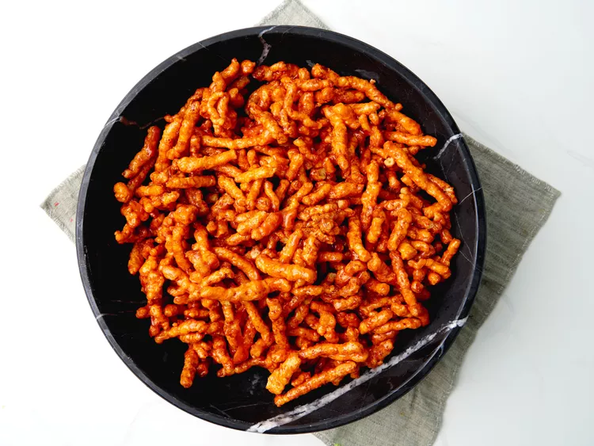

Caramel Cheetos

See the picutre of cheetos. Looks terrible, no? Let's try and make it, to see just how bad it truly is.
- 2 bags of cheetos
- 1 cup corn syrup
- 1 cup brown sugar
- 1 stick of butter
here are the steps you need to follow to make the Cheetos. (yes you're really supposed to bake the cheetos).
- over to 120 c
- combine corn syrup, sugar, and butter into pan. Brown lightly for approximately 1 minute
- mix with cheetos
- bake for one hour (yes, really). stir every 15 minutes (!!!)
Yes, this is a real recipe.